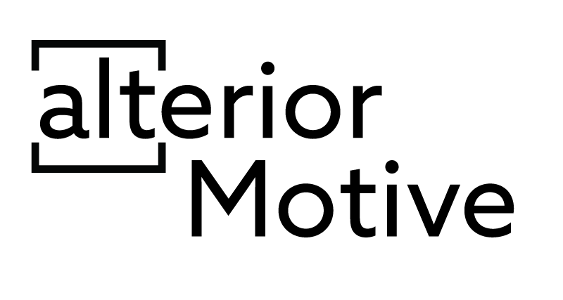
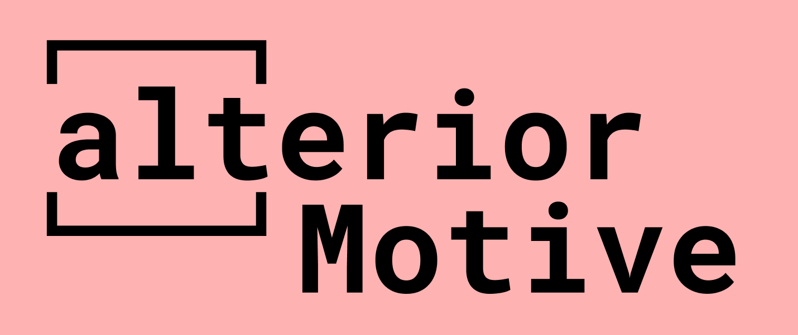

UX / UI Portfolio
While navigating the internet, users with disabilities constantly encounter inappropriate alternative text, low contrast, empty links and many other problems that keep them from navigating the web smoothly. How might we make accessible web design more intuitive for designers?
When coming up with the website name and attempting to drive forward the point I wanted to make with my project, I thought that the alt attribute used in HTML was a great example to highlight. The alt attribute provides information on images that are on the website to users and has an important role for users with visual impairments. It was also the first accessibility feature I learned about in class, which is why I decided to incorporate it in the logo.
Ulterior Motive is "a hidden meaning" or "unrevealed reason behind something". The alt attribute is somewhat hidden to most website users and you only really notice it when you need it and it's not there. Changing the U to an A was the way I found to highlight the importance of digital accessibility, as something so simple as adding a short description to an image (or deciding not to) can completly alter people's ability to use your website.
I started by researching web accessibility and the most common accessibility issues on websites. This taught me that most websites are low contrast and missing elements that are quite simple to implement, such as alternative text for images, form input labels, and document language. Taking that into consideration, I decided to narrow the scope of my project to visual impairments. I then sent out surveys and interviewed designers, developers, and people with different types of visual impairments such as color vision deficiency and low vision.
After this initial research, I reached a pivoting point; implementing accessibility into websites was not as hard as I thought it would be. The main issue was that accessibility was often an afterthought and tasks that would have been simple if implemented from the beginning, such as adding alternative texts for images, turned into a substantial amount of work. On top of that, having to go back into your code at the end of your design process to implement accessibility tools, such as a screen readable navigation bar, turns into a risky task, often leading to hours of debugging, which is something I could relate to as both a designer and a developer. I then decided to include accessible code snippets, color palettes, and best practices on my website with the hopes of creating a platform that would teach and encourage developers to think about accessibility from the beginning of their design process.
After a few weeks of wire-framing the website, card sorting, and usability testing, I prototyped a high-fidelity website using Figma. I coded this website in React.js and so far I have learned that in order for a design project to translate well into code, it is important to be able to predict the challenges a developer could come across while implementing your designs allows you to be two steps ahead of any issues you might encounter.
I had the oportunity to code part of my project as a Social Media platform to share accessible color palettes for a class called Dynamic Web Applications. Here is a video of the working project!
For my senior project, I coded the original website using React.js. Click the link below the images to see the current iteration.